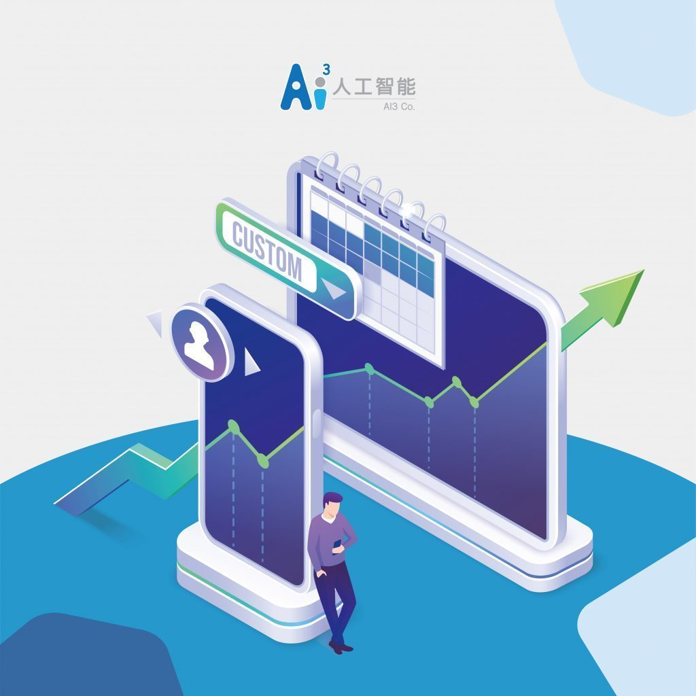
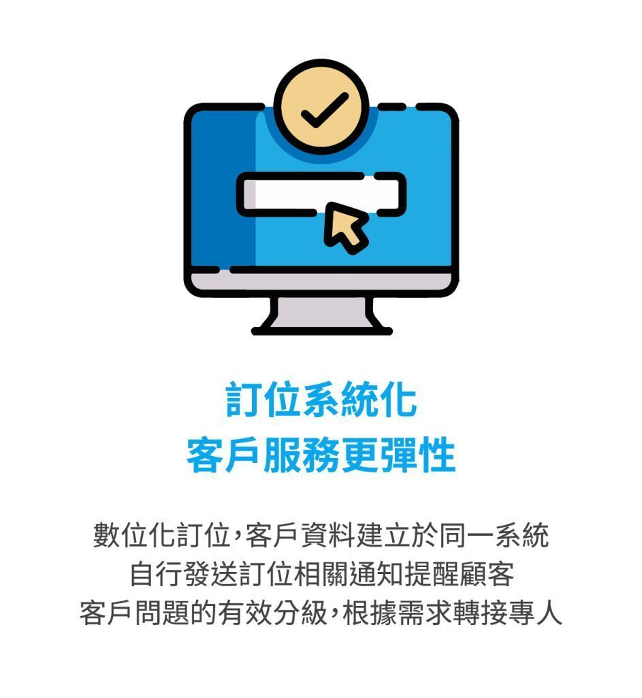
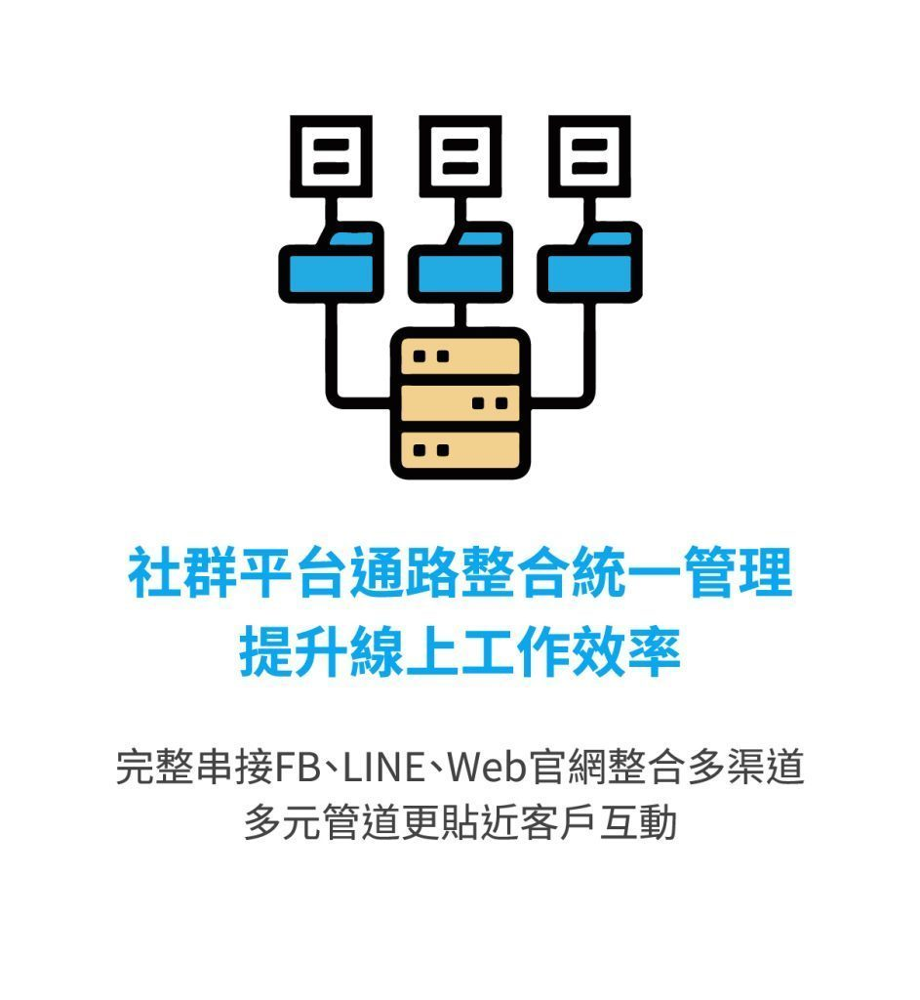
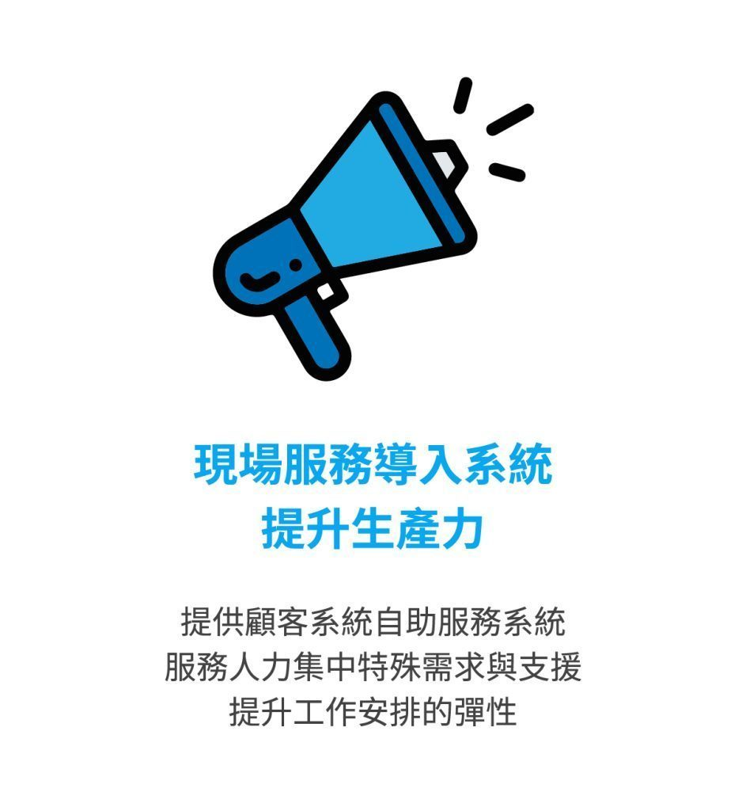
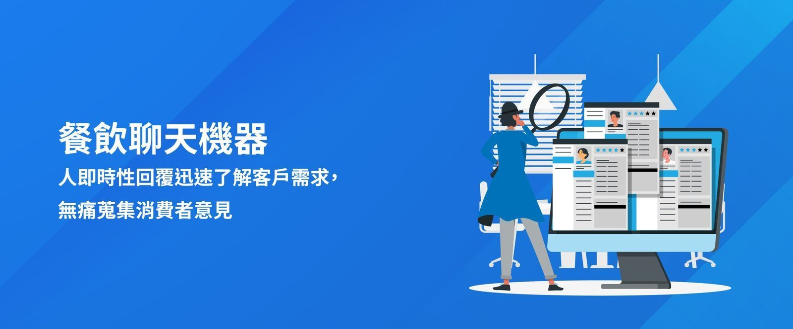

在2016年，Facebook宣布開放Messenger API之後，聊天機器人(ChatBot)的應用逐漸興起並且受到重視，許多企業透過API的整合，讓消費者在與聊天機器人的互動中，可以不經過真人服務，僅透過自動化回覆產生購買行為。
由於行動裝置帶來的便利性，消費者對於購買過程的便捷要求逐漸提高，新型態的對話式商務，可以讓品牌在滿足客戶進行消費諮詢的服務中，節省掉大量的客服成本，同時聊天機器人在自動化回覆與行銷活動應用對於提升營業額更佔有非常重要的影響。

智能機器人為客戶服務創造全新價值！藉由人機協作完美優化作業流程



一、訂位系統化，客戶服務更彈性
顧客訂位通道轉向數位化，智能機器人的運用減少了客服接聽電話的人力成本，並有效將客戶資料建立於同一系統，且藉由智能機器人自行發送訂位相關通知提醒顧客，並進行客戶問題的有效分級，根據需求轉接專人，解決問題更便利。
二、社群平台通路整合統一管理提升線上工作效率
智能機器人可以完整串接FB、LINE、Web官網整合多渠道進線進行更有效的管理客戶服務，並且藉由多元管道更貼近客戶進行互動。
三、現場服務導入系統降低人力成本
智能機器人除能有效減低客服人力成本外，現場提供顧客系統點餐服務，外場免去現場為顧客點餐的時間，人力有效集中於現場服務與內場支援，大幅降低人力支援與工作安排的彈性。
四、設計網路互動加強客戶體驗
透過與智能機器人的人機協作，加上社群平台的通路整合，智能機器人還能透過與顧客的對話進行顧客的特徵擷取，進行顧客關係管理分析，設計流暢的客服對話、提供新奇的會員服務，對於個人的行銷推播有更精確的幫助。
該如何完美應用機器人對話與商務，掌握即時性商機?我們一一解密

一、餐飲聊天機器人即時性回覆迅速了解客戶需求，無痛蒐集消費者意見
餐飲業聊天機器人，除了能幫助餐飲業者省下不少人力客服費用外，能透過聊天機器人做即時訂位與餐點介紹，讓顧客免等待即可快速訂位與了解餐飲特色，並且可藉由智能機器人導入線上訂餐系統，讓顧客使用手機就能進行點餐，餐飲業者的外場服務人員免去定點為顧客點餐的時間，可以更彈性的進行工作調整，也提供顧客更便利的用餐體驗。
聊天機器人的24小時服務，克服現場人力及營業時間的限制，即時回覆客戶問題，並由後台蒐集與建立客戶資料庫，在未來的行銷中扮演重要的角色。
二、觀光飯店聊天機器人帶領顧客食、宿、遊、購、行一路玩到底
聊天機器人可以針對觀光及飯店業者，整合不同的社群通路平台，讓業者不需隨時於電腦前待命，由聊天機器人回覆重複性問題，並串接客服櫃台與訂房，有效提高員工工作效率，減少訊息閒置率。在聊天機器人的內容設定中規劃地方美食、城市交通、旅遊景點、特色伴手禮等介紹，協助地方觀光業者進行客戶管理及推廣，帶動產業、店家復甦。
以君品酒店為例，使用LINE@ 及 Messenger 聊天整合客服平台，進行聊天機器人導向回覆，採用人機一對一對話服務方式，引導顧客進入訂房系統進行線上訂房，除了提供訂房服務外，包含食、遊、購、行等資訊推播，也讓消費者在一對一對話諮詢的過程中，接收更多消費網路資訊。另外「常見問題 」的崁入也是聊天機器人必備諮詢途徑，君品酒店也將此資訊導入其中。
三、電子商務智能機器人提供快速貼心的客製化服務
24小時營業的Momo購物網智能機器人momoco，能即時讀取客戶退換貨、線上查詢訂單與配送進度等需求，提供引導連結供顧客進入頁面查詢，並且momoco智能機器人能直接回覆顧客查詢momo幣/紅利金的餘額。
momoco同時具備許多生活知識，會根據聊天內容回覆FAQ常見問題與線上行銷活動資訊幫助客戶快速尋找商品，Momo購物網的客製化服務已有超過千萬用戶使用，提供全方位的線上諮詢，精準在第一線解決客戶問題，為電子商務智能機器人最佳典範。
打破傳統限制，聊出新商機，聊天機器人幫助中小企業把握對話式商務領域
近幾年來，社群媒體的興起已逐漸取代傳統品牌的互動、宣傳與銷售，年輕族群已經習慣藉由社群媒體、聊天機器人了解新產品、進行品牌互動，如單純依照過往顧客品牌互動模式進行階段性引導已然不足，品牌更需利用即時性溝通進而區分消費者需求與預測購買動機，因此聊天機器人對未來的電子商務可以說是一大利器。
對於中小企業來說，數位轉型將是未來的「必然」趨勢， 但在數位轉型的過程中最常遇見系統導入成本高、資訊人才短缺、會員資料量不足等問題，因此有業者將聊天機器人打造成雲端訂閱型的電商機器人、人資機器人、客服機器人、智能服務機器人…等各式機器人服務，以輕量標準型的訂閱模式提供企業所需的功能，輕鬆進行後台的操作與維護，降低系統投資的成本及風險，從此建立專業客服平台並塑造自我品牌形象，數位轉型跨進一大步。
對話式商務應用已是橫跨各大產業未來趨勢，若企業能成功掌握，利用與用戶專屬「對話」體驗，創造符合品牌形象的聊天機器人，提高用戶對品牌的認知與記憶，建構良好的品牌形象及口碑，吸引更多新客群，提升服務品質，迎來整體營收的增加，創造出耳目一新的品牌價值。